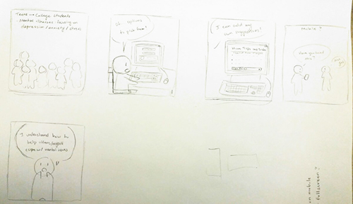

For the first storyboard, I thought about how my audience would be teenagers and young adults my age, and how they would interact with my game on their computers. I have this whole idea of users being comfortable and probably alone, playing the game at home. After talking it over in class with my partner, I found that I could add more things for users to interact with, and I could move my game to serve mobile users as well.
For the second run through storyboarding, I took my partner's advice and added a section at the end of the game where users could input their own advice on how to cope with mental illnesses. I also added an idea to create a mobile version of the game to let users play on the go, or at least get more information on their phones about ways to go about dealing with depression/anxiety/stress.